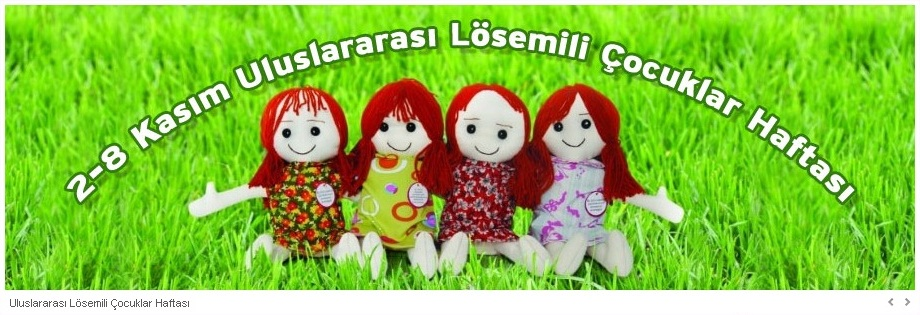
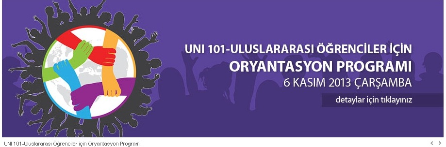

RESÝMLER
Lösemili çocuklar haftasý
Oryantasyon programý
Kýzýlay Haftasý
Türk Harf Devrimi Haftasý
Belgesel Haftasý
Týp Öðrencilerimiz
Hepsini gör


DUYURULAR
Sýhhiye Yerleþkesi Yaya Yolu Çalýþmalarý Bilgilendirme Notu
02.11.2013
2013-2014 Erasmus Ders Verme Hareketliliði Sonuçlarý açýklanmýþtýr
01.11.2013
2013-2014 Erasmus Eðitim Alma Hareketliliði Mülakat Sýnavý ile ilgili duyuru
01.11.2013
Beytepe Yerleþkesine Giriþlerde Öðrenci Kimlik Kartý Kontrolleri ile ilgili duyuru
31.10.2013
Rektörlük Uzman Alýmý Sonucu
30.10.2013
Ankara Büyükþehir Belediyesi, Sýhhiye yerleþkemize ulaþýmý etkileyecek þekilde asfalt ve kaldýrým yenileme çalýþmalarýna baþlamýþtýr. Bu nedenle, zaman zaman trafik düzeninde aksama veya deðiþiklikler olabilmektedir. Bu aksaklýklarý en az düzeye indirebilmek için hafta içi 8.00-9.30 arasý çalýþmaya izin verilmemiþtir. Alt yapý çalýþmalarýnýn daha kýsa sürede tamamlanmasýný saðlamak amacýyla, gerekli güvenlik önlemleri alýnarak ve çevreye zarar vermeyecek þekilde çalýþmalara gece de devam edilecektir.
28.10.2013
Hacettepe Üniversitesi Akademik ve Ýdari Hizmet Birimlerinde Kurum Ev Ýdaresi Hizmetlerinin Ýyileþtirilmesi Projesi kapsamýnda geliþtirilen "Memnuniyet Anketleri" hakkýnda
21.10.2013
ANKET:Üniversitemizi tercih eder miydiniz?
Evet
Hayýr
Kararsýzým
HACETTEPE ÜNÝVERSÝTESÝ ÝLETÝÞÝM ADRESLERÝMÝZ:Alan Kodu : (+90) (312) Santral : 305 5000 (Sýhhiye) 305 5050 (Beytepe) HÜ Hastaneleri Telefonla Randevu Çaðrý Merkezi : 444 4 444 Adres : Hacettepe Üniversitesi Rektörlüðü Sýhhiye / ANKARA Rektörlük : 305 1001 - 305 1002 (Sýhhiye) 297 6001 (Beytepe) Rektör Yardýmcýlýðý : 305 2001 - 305 2002 (Sýhhiye) 297 6002 - 297 6010-297 6020 - 297 6025 (Beytepe) Genel Sekreterlik : 305 1003 - 305 1004 (Sýhhiye) 297 6030 (Beytepe) Genel Sekreter Yardýmcýlýðý : 297 6030 (Beytepe) Ýdari Birimlerin Telefon ve Faks Numaralarý Daire Baþkanlýklarý Telefon Faks Bilgi Ýþlem Daire Baþkanlýðý 297 6200 299 2088 Ýdari ve Mali Ýþler Daire Baþkanlýðý 305 1041 311 4390 Kütüphane ve Dokümantasyon Daire Baþkanlýðý 305 1061 311 7998 Öðrenci Ýþleri Daire Baþkanlýðý 297 6571 299 2090 Personel Daire Baþkanlýðý 305 1025 309 0620 Saðlýk Kültür ve Spor Daire Baþkanlýðý 305 1077 311 6024 Strateji Geliþtirme Daire Baþkanlýðý 305 1009 - Yapý Ýþleri ve Teknoloji Daire Baþkanlýðý 305 1050 311 3772 Genel Sekreterliðe Baðlý Birimler Telefon Faks Basýn ve Halkla Ýliþkiler Müdürlüðü 305 2144 310 2366 Bilimsel Araþtýrmalar Birimi 310 1348 309 3699 Büro Ýþleri Müdürlüðü 305 1006 - Hukuk Müþavirliði 305 2346 305 1015 Yazý Ýþleri Müdürlüðü 305 1008 310 5552 Akademik Birimlerin Telefon ve Faks Numaralarý Dekanlýklar Telefon Faks Diþ Hekimliði Fakültesi 311 0016 310 4440 Eczacýlýk Fakültesi 310 8831 311 4777 Edebiyat Fakültesi 297 6811 299 2085 Eðitim Fakültesi 297 6821 299 2083 Fen Fakültesi 299 2080 299 2093 Güzel Sanatlar Fakültesi 299 2062 299 2061 Hukuk Fakültesi 297 6270 297 6275 Ýktisadi ve Ýdari Bilimler Fakültesi 297 6830 299 2084 Ýletiþim Fakültesi 297 6225 297 6226 Kastamonu Týp Fakültesi 305 3038 305 3037 Mühendislik Fakültesi 299 2081 299 2078 Týp Fakültesi 305 1670 310 0580 Saðlýk Bilimleri Fakültesi 305 2051 305 2054 Enstitüler Telefon Faks Atatürk Ýlkeleri ve Ýnkýlap Tarihi Enstitüsü 297 6870 299 2076 Biliþim Enstitüsü 297 7193 297 7194 Çocuk Saðlýðý Enstitüsü 324 4291 324 3284 Fen Bilimleri Enstitüsü 297 6867 299 2157 Güzel Sanatlar Enstitüsü 297 6840 299 2061 Halk Saðlýðý Enstitüsü 305 1590 311 0072 Nörolojik Bilimler ve Psikiyatri Enstitüsü 305 2130 311 3973 Nüfus Etütleri Enstitüsü 310 7906 311 8141 Nükleer Bilimler Enstitüsü 297 6880 299 2037 Onkoloji Enstitüsü 309 2904 309 2905 Saðlýk Bilimleri Enstitüsü 305 1090 309 3190 Sosyal Bilimler Enstitüsü 297 6860 299 2147 Türkiyat Araþtýrmalarý Enstitüsü 297 6771 297 7171 Yüksekokullar Telefon Faks Devlet Konservatuvarý 215 8467 215 8466 Spor Bilimleri ve Teknolojisi Yüksekokulu 297 6890 299 2167 Yabacý Diller Yüksekokulu 297 8085 299 2158 Meslek Yüksekokullarý Telefon Faks Bala Meslek Yüksekokulu 876 1401 876 1402 Hacettepe Meslek Yüksekokulu 297 6795 297 6795 Polatlý Saðlýk Hizmetleri Meslek Yüksekokulu 623 8850 621 1024 Polatlý Teknik Bilimler Meslek Yüksekokulu 621 1023 623 3749 Saðlýk Hizmetleri Meslek Yüksekokulu 305 1587 310 2730 Sosyal Bilimler Meslek Yüksekokulu 311 6015 311 6089